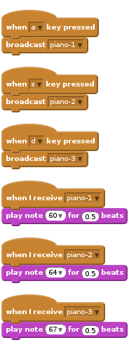
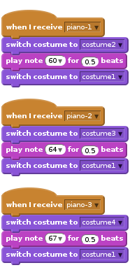
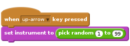

Activity Checklist
- Draw a piano by creating black and white rectangles.

Now create a script which plays a note when the “a” key is pressed.
![when [a v] key pressed
broadcast [piano-1 v]
when I receive [piano-1 v]
play note (60 v) for (0.5) beats](d9fc930e8288c766ff7973a51402748f27aa30ed.png)
Create two more notes when you press “s” and “d” on the keyboard.

- Copy the costume 3 times. Fill in a different key on each one.


Make each note switch to a different costume and then switch back to
costume1.
Challenge: Create a way to change the instrument.
